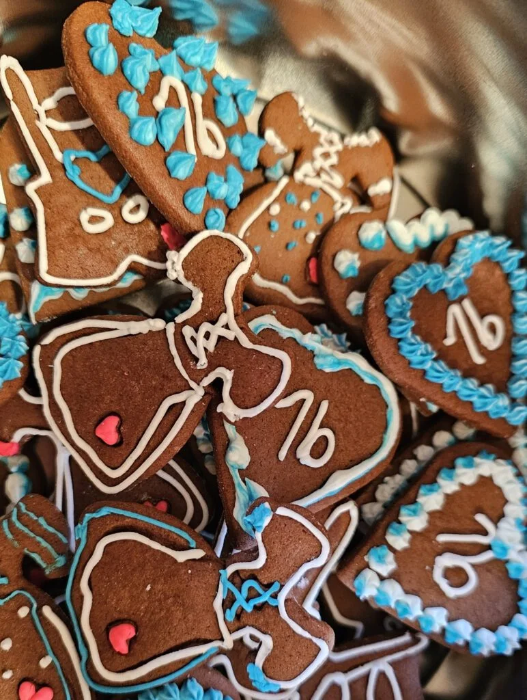
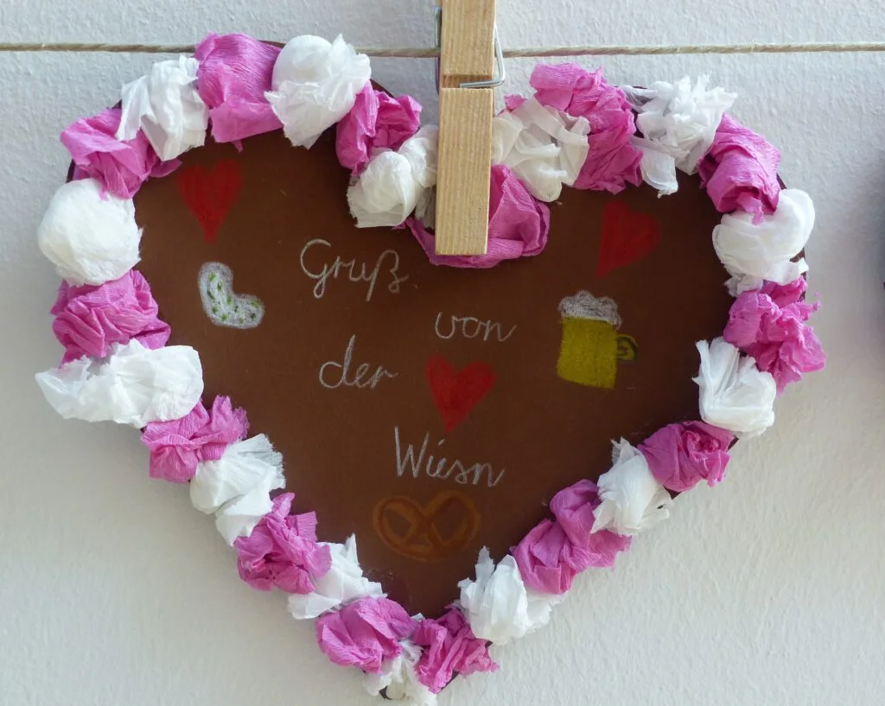

Oktober 2026
Oktoberfest bei uns in der Schule
Ein Gruß von der Wiesn aus unserem Schulhaus.
Zum Oktoberfest gab es bei uns bunte Herzen aus Papier und verzierte Lebkuchenherzen. Ein gebasteltes Herz ist hier zu sehen.

Bilder ansehen

Lebkuchenherzen zum Oktoberfest 
Ein weiterer Gruß von der Wiesn